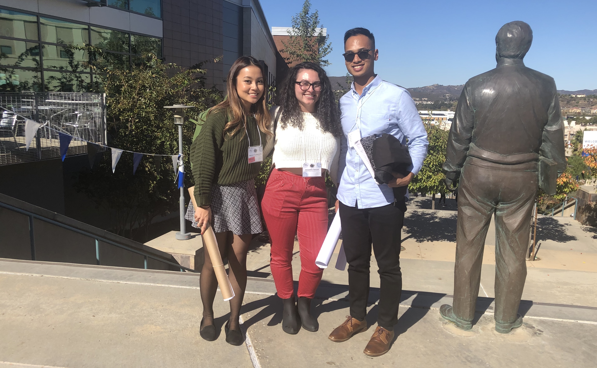

Research Experience
C-REAL:

My role as a Student Research Assistant at C-REAL provides me with opportunity to analyze and evaluate programs within institutions. Currently, I co-lead the Children’s Center project and the Maywood Fair. I also provide support to the Director, Dawn Person, and other team members.
SCURR:
Under the supervision of Dr. Jennifer Coons, we conducted a full cycle analysis, from survey creation to journal submission, studying the relationship between academic success and campus involvement. Currently, one paper is under review and we are conducting our second study with a bigger sample of CSUF students.
Projects
As a final project for my UI/UX Design class, we had to create a prototype of our interest. I decided to add on to my trivia app because I was most familiar with the phone layout and experience. My favorite aspects of this project was picking the color schemes.
*work in progress!
My first task at C-REAL was to redesign the current website to make it more accessible and concise. The main concerns were that the pages were too dull, disorganized, and hard to navigate. The target demographic were educators and professionals in educational institutions that were interested in learning more about C-REAL.